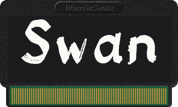
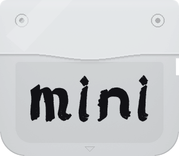
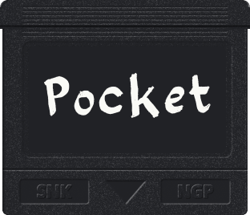
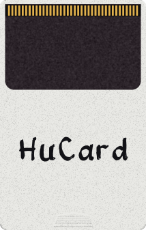
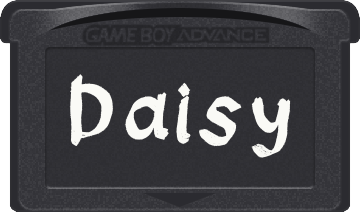

Every system in both: Game Boy Advance · Game Boy · Game Boy Color · WonderSwan · Atari Lynx · Pokémon mini · Game Gear · NeoGeo Pocket · TurboGrafx-16 · Nintendo DS · PokeDaisy
Plus HDMI out to your TV, pixel transparency for Game Boy, Shelf Life, and a cart that opens for every game